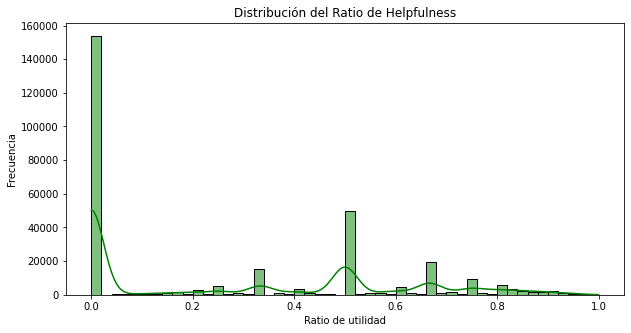

Maestría en Analítica de Datos#
Proyecto Final Machine Learning 2025-10#
ETL y EDA#
# Importar librerías necesarias
from datasets import load_dataset
import pandas as pd
# Cargar el dataset desde Huggin Face
dataset = load_dataset("akshatmehta98/amazon_reviews")
# Mostrando estructura del dataset
dataset
/opt/miniconda3/envs/ml_venv/lib/python3.9/site-packages/scipy/__init__.py:146: UserWarning: A NumPy version >=1.16.5 and <1.23.0 is required for this version of SciPy (detected version 1.23.5
warnings.warn(f"A NumPy version >={np_minversion} and <{np_maxversion}"
DatasetDict({
train: Dataset({
features: ['HelpfulnessNumerator', 'HelpfulnessDenominator', 'Summary', 'text', 'labels', 'sentiment_code', 'input_ids', 'attention_mask'],
num_rows: 303316
})
test: Dataset({
features: ['HelpfulnessNumerator', 'HelpfulnessDenominator', 'Summary', 'text', 'labels', 'sentiment_code', 'input_ids', 'attention_mask'],
num_rows: 116661
})
})
# Convertimos a DataFrame para visualizar mejor
df_train = dataset['train'].to_pandas()
df_test = dataset['test'].to_pandas()
# Veamos las primeras filas del train
df_train.head(10)
| HelpfulnessNumerator | HelpfulnessDenominator | Summary | text | labels | sentiment_code | input_ids | attention_mask | |
|---|---|---|---|---|---|---|---|---|
| 0 | 0 | 0 | Great find! | these candies are very hard to find in the sin... | positive | 2 | [ 0 6097 831 34204 621 4552 7... | [1 1 1 1 1 1 1 1 1 1 1 1 1 1 1 1 1 1 1 1 1 1 1... |
| 1 | 0 | 0 | very tasty - and healthy | im on the healthy nutrition and fitness kick t... | positive | 2 | [ 0 566 98 70 87349 150017 ... | [1 1 1 1 1 1 1 1 1 1 1 1 1 1 1 1 1 1 1 1 1 1 1... |
| 2 | 0 | 0 | I liked the old man design better :) | i dont normally add content to amazon because ... | positive | 2 | [ 0 17 13319 3638 538 15190 10... | [1 1 1 1 1 1 1 1 1 1 1 1 1 1 1 1 1 1 1 1 1 1 1... |
| 3 | 0 | 0 | Good gluten free cookie! | good tasting cookie will satisfy your sweet to... | positive | 2 | [ 0 4127 3251 1916 9332 1221 40407 ... | [1 1 1 1 1 1 1 1 1 1 1 1 1 1 1 1 1 1 1 1 1 1 1... |
| 4 | 88 | 95 | Organic but BPA in the lid! | our baby really loves to eat these and they co... | negative | 0 | [ 0 2446 15546 6183 5161 7 ... | [1 1 1 1 1 1 1 1 1 1 1 1 1 1 1 1 1 1 1 1 1 1 1... |
| 5 | 0 | 0 | a must for gin and tonic | i once tried q tonic for my gin and tonic now ... | positive | 2 | [ 0 17 24145 37842 8096 47 6... | [1 1 1 1 1 1 1 1 1 1 1 1 1 1 1 1 1 1 1 1 1 1 1... |
| 6 | 1 | 2 | Delicious! | glad i ordered these they are really yummy i g... | positive | 2 | [ 0 9525 17 12989 297 6097 1... | [1 1 1 1 1 1 1 1 1 1 1 1 1 1 1 1 1 1 1 1 1 1 1... |
| 7 | 0 | 0 | Great tasting tea at best price | my family is big on tea drinking and cant sett... | positive | 2 | [ 0 759 14449 83 6957 98 26... | [1 1 1 1 1 1 1 1 1 1 1 1 1 1 1 1 1 1 1 1 1 1 1... |
| 8 | 6 | 9 | Tasted bad. Tossed most in the trash | i lived in the islands for 5 years and i know ... | negative | 0 | [ 0 17 158930 23 70 90695 ... | [1 1 1 1 1 1 1 1 1 1 1 1 1 1 1 1 1 1 1 1 1 1 1... |
| 9 | 0 | 0 | Awesome service and great products | we sent this product as a gift to my husbands ... | positive | 2 | [ 0 642 9325 903 12996 237 ... | [1 1 1 1 1 1 1 1 1 1 1 1 1 1 1 1 1 1 1 1 1 1 1... |
#Revisión general del train
df_train.info()
<class 'pandas.core.frame.DataFrame'>
RangeIndex: 303316 entries, 0 to 303315
Data columns (total 8 columns):
# Column Non-Null Count Dtype
--- ------ -------------- -----
0 HelpfulnessNumerator 303316 non-null int64
1 HelpfulnessDenominator 303316 non-null int64
2 Summary 303316 non-null object
3 text 303316 non-null object
4 labels 303316 non-null object
5 sentiment_code 303316 non-null int64
6 input_ids 303316 non-null object
7 attention_mask 303316 non-null object
dtypes: int64(3), object(5)
memory usage: 18.5+ MB
df_train.describe()
| HelpfulnessNumerator | HelpfulnessDenominator | sentiment_code | |
|---|---|---|---|
| count | 303316.000000 | 303316.000000 | 303316.000000 |
| mean | 1.844644 | 2.815661 | 0.929773 |
| std | 6.636582 | 7.804405 | 0.833000 |
| min | 0.000000 | 0.000000 | 0.000000 |
| 25% | 0.000000 | 0.000000 | 0.000000 |
| 50% | 0.000000 | 1.000000 | 1.000000 |
| 75% | 2.000000 | 3.000000 | 2.000000 |
| max | 844.000000 | 923.000000 | 2.000000 |
# Distribución de la variable Objetivo en el train
df_train["labels"].value_counts(normalize=True)
negative 0.384523
positive 0.314296
neutral 0.301181
Name: labels, dtype: float64
# Calculemos la longitud de las reseñas en PALABRAS
df_train["length_words"] = df_train["text"].apply(lambda x: len(str(x).split()))
# Calculemos la longitud de las reseñas en CARACTERES
df_train["length_chars"] = df_train["text"].apply(lambda x: len(str(x)))
# Librerías necesarias
import matplotlib.pyplot as plt
import seaborn as sns
# Histograma de longitud en palabras
plt.figure(figsize=(10,5))
sns.histplot(df_train['length_words'], bins=50, kde=True)
plt.title('Distribución de la longitud de reseñas (palabras)')
plt.xlabel('Número de palabras')
plt.ylabel('Frecuencia')
plt.show()
# Histograma de longitud en caracteres
plt.figure(figsize=(10,5))
sns.histplot(df_train['length_chars'], bins=50, kde=True, color='orange')
plt.title('Distribución de la longitud de reseñas (caracteres)')
plt.xlabel('Número de caracteres')
plt.ylabel('Frecuencia')
plt.show()


# Relacionamos longitud con el sentimiento
sns.boxplot(data=df_train, x='labels', y='length_words')
plt.title('Longitud de reseñas por tipo de sentimiento (en palabras)')
plt.xlabel('Sentimiento')
plt.ylabel('N° de palabras')
plt.show()

# Distribución de las variables HelpfulnessNumerator y HelpfulnessDenominator
# HelpfulnessNumerator
plt.figure(figsize=(10,5))
sns.histplot(df_train['HelpfulnessNumerator'], bins=50, kde=True)
plt.title('Distribución de HelpfulnessNumerator')
plt.xlabel('Número de personas que encontraron útil la reseña')
plt.ylabel('Frecuencia')
plt.show()
# HelpfulnessDenominator
plt.figure(figsize=(10,5))
sns.histplot(df_train['HelpfulnessDenominator'], bins=50, kde=True, color='orange')
plt.title('Distribución de HelpfulnessDenominator')
plt.xlabel('Número total de votos de utilidad')
plt.ylabel('Frecuencia')
plt.show()


# Agregamos una columna de ratio de utilidad
# Esto normaliza un poco el análisis
df_train['helpfulness_ratio'] = df_train['HelpfulnessNumerator'] / (df_train['HelpfulnessDenominator'] + 1)
#Visualizamos la distribución del ratio de utilidad
plt.figure(figsize=(10,5))
sns.histplot(df_train['helpfulness_ratio'], bins=50, kde=True, color='green')
plt.title('Distribución del Ratio de Helpfulness')
plt.xlabel('Ratio de utilidad')
plt.ylabel('Frecuencia')
plt.show()

# Veamos una posible relación entre longitud y utilidad
plt.figure(figsize=(10,5))
sns.scatterplot(data=df_train, x='length_words', y='helpfulness_ratio', alpha=0.3)
plt.title('Longitud vs. Ratio de Helpfulness')
plt.xlabel('N° de palabras')
plt.ylabel('Ratio de utilidad')
plt.show()